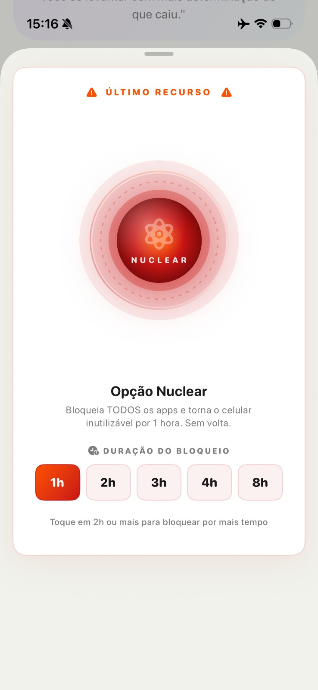

Em resumoAbra o Lyrio, vá em Emergência e toque em Socorro. O app interrompe o impulso com uma respiração guiada, dicas rápidas e uma palavra de encorajamento. Se a vontade não passar, a Opção Nuclear bloqueia o celular inteiro por uma a oito horas — sem volta.
Por que a madrugada é o momento mais difícil?
Cansaço, silêncio e o celular na mão formam a combinação perfeita. A parte do cérebro que segura os impulsos é justamente a que mais sente o sono, e o hábito aproveita esse intervalo para agir no piloto automático.
Saber disso já muda alguma coisa: a vontade das três da manhã não diz quem você é. Ela diz que você está cansado.
O passo a passo, quando a vontade bater
- Saia do lugar.Levante da cama, acenda a luz, vá até a cozinha. Mudar de ambiente quebra o roteiro que o hábito já conhece.
- Abra a aba Emergência e toque em Socorro.Você não precisa decidir nada agora — só seguir o que aparece na tela pelos próximos minutos.
- Escreva uma frase no Diário.O que você está sentindo, em uma linha. Tirar o pensamento da cabeça é o que tira o impulso do piloto automático.
Cada recaída pode ser o ponto de virada se você se levantar com mais determinação do que caiu.Da tela de Emergência do Lyrio
E se mesmo assim não passar?
Para as noites em que nada funciona, existe a Opção Nuclear. Ela bloqueia todos os apps e deixa o celular inutilizável pelo tempo que você escolher, de uma a oito horas.
Não é castigo. É tirar a decisão das mãos do você cansado e entregá-la ao você que acorda amanhã.

Perguntas frequentes
Alguém fica sabendo que eu usei o Socorro?
Não. O que você faz na aba Emergência e escreve no Diário é privado e fica só com você.
Dá para cancelar a Opção Nuclear depois de ativar?
…
E se eu já recaí hoje?
…
O Lyrio funciona no Android?
…